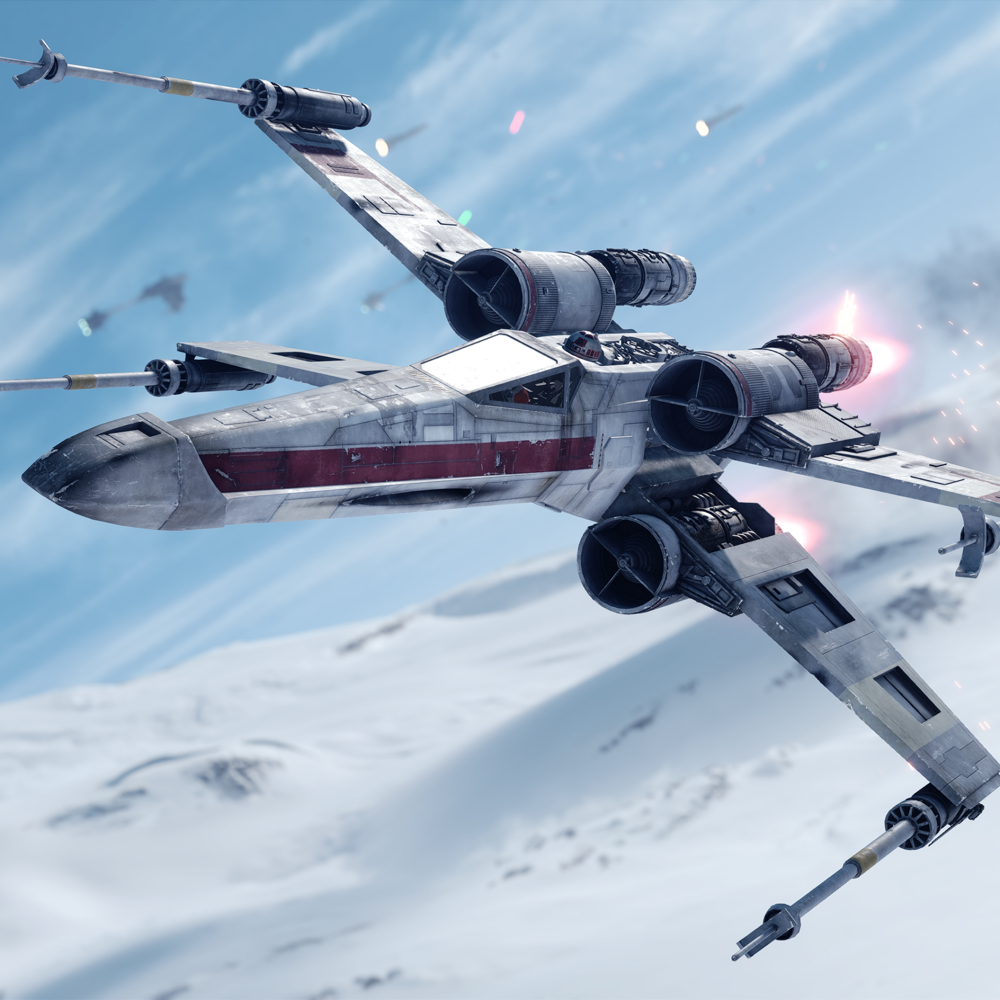
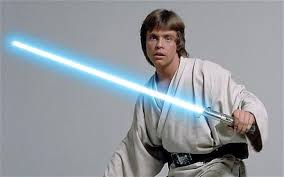
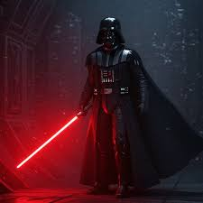
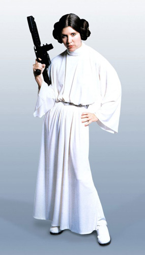
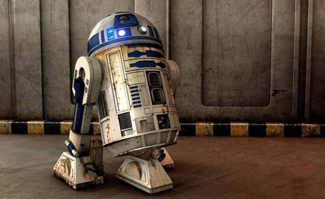
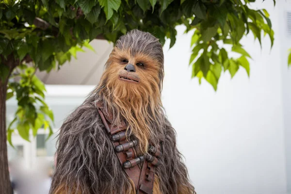
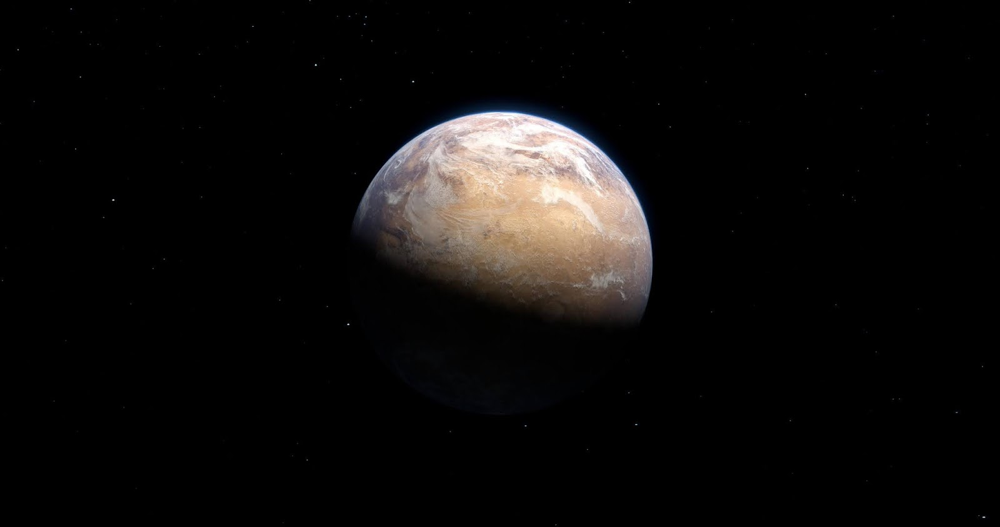
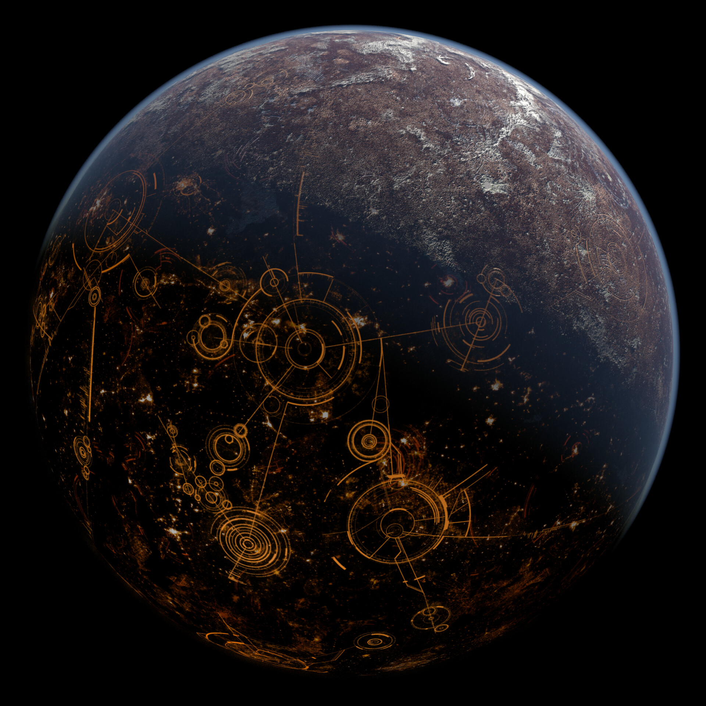

Naves Icônicas

Millennium Falcon
A nave mais rápida da galáxia, pilotada por Han Solo.

X-Wing
Nave de combate dos rebeldes, versátil e potente.
Explore o universo de Star Wars: personagens, naves e planetas icônicos.

protagonista da trilogia original de Star Wars (1977-1983), um icônico cavaleiro Jedi que ascende de fazendeiro em Tatooine a herói da galáxia.

É um icônico Lorde Sith e o principal antagonista da trilogia original de Star Wars.

Ela é a Princesa de Alderaan, senadora, líder da Aliança Rebelde e general da Resistência.
É um lendário Mestre Jedi de uma espécie misteriosa em Star Wars, conhecido por sua sabedoria, baixa estatura (76 cm) e conexão profunda com a Força.

É um icônico droide astromecânico da saga Star Wars, conhecido por sua bravura, inteligência e lealdade.

É um lendário guerreiro Wookiee de Kashyyyk e o fiel copiloto de Han Solo na nave Millennium Falcon na franquia Star Wars.
A nave mais rápida da galáxia, pilotada por Han Solo.

Nave de combate dos rebeldes, versátil e potente.

Planeta desértico, lar de Luke Skywalker.

Capital da galáxia, cheia de arranha-céus e senadores.